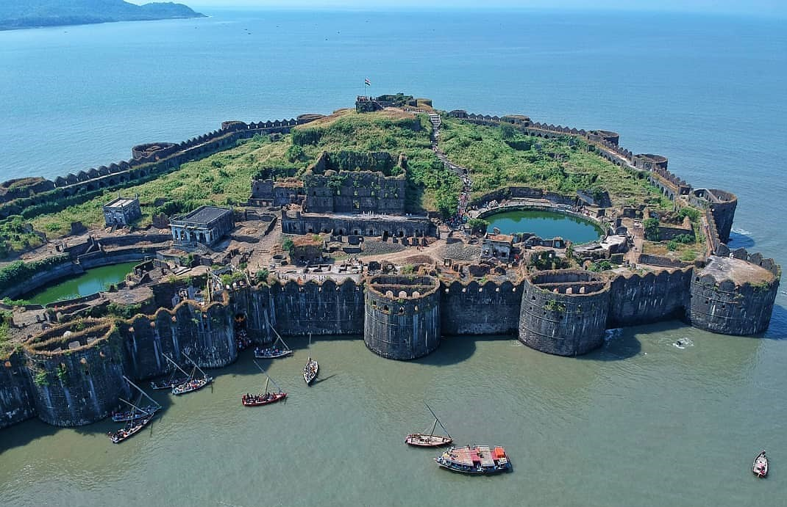

Janjira is the local name of a famous fort and tourist spot situated on an island just off the coastal town/city of Murud, in the Raigad district of Maharashtra, India.Janjira fort is considered one of the strongest marine forts in India which has 19 round bastions still intact.
Murud-Janjira Fort
Best place to visit

The Janjira Island Fort is a wonder of architectural achievement
Things to Do Take a Trip Down History
Murud is a peaceful and quiet village. From here you can go to Rajpuri which has a big mosque while at Khokari are the tombs of the Siddi rulers. To the north of Murud is a suburb called Phulshaker. On a picturesque hillock facing the sea is the palace of the Siddis where the seal of the rulers can be seen inscribed on one of its doors. Several of the rulers’ wildlife trophies, swords, rifles and other weapons have been positioned as exhibits inside the palace.
Discover Kashid, Phansad and More...
A few kilometers to the north are additional coastal villages like Nandgaon with a Ganesh temple; Kashid with its white sand beach; a coastal sanctuary called Phansad with a dense forest; and Salav with its Birla Temple. The coastal fort of Korlai and the rock-cut caves of Kude-Mandad are a number of the additional attractions. Relaxing on the beach, taking a dip in the ocean, and going for long walks are some of the things to do in Murud-Janjira. One can also visit scenic beaches like Korlai, Revdanda, Chaul, Alibag. The river Kundalika, which is not far from this place, is popular for the white water rafting. For the foodies, Murud offers delicious Konkan cuisine.
Address : - Janjira, Murud Village, District - Raigad, Maharashtra - 402401. Nearest Railway Station : - Roha Railway Station
Located on an island off Murud village, this is one of the strongest marine forts in India. Surrounded by Arabian Sea on all sides, the fort is believed to have never been defeated in war despite multiple attempts by warring armies.
For motivation Play Shivaji Maharaj Maharashtrache Raje Marathi movie songs MP3 by Yashwant Thakur.
Top places to stay near the Murud Janjira fort
Murud Janjira has some fascinating options to stay that will ensure that you enjoy every bit of the place without burning a hole in your pocket. As mentioned above, this place has something for every kind of traveler, so whether you are a solo traveler looking for a reasonably priced room to crash or a couple looking to spend some quality time in the vicinity of nature, you will definitely find your kind of accommodation here.
There are many hotels in Murud in the vicinity of fewer than five km from the fort that are cozy, comfortable, and suit every kind of budget. If you love the waters, you can opt for a hotel next to Murud Beach. If you want to indulge in some adventure, you can spend the night in a camp. The price ranges from 1300 INR per night to 6000. You can spend an amazing time at this place without having to burn a hole in your pocket.
Thank you for reading till the end
This map helps you to visit Janjira fort very easily 😎